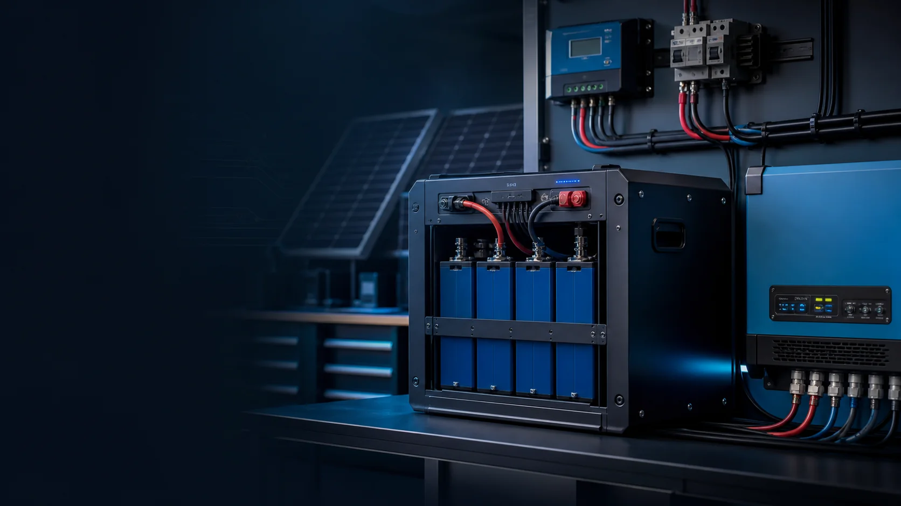

Bedarf zuerst
Verbrauch, Ort und Ziel werden geklärt – daraus folgt die richtige Dimensionierung.

Energietechnik · Batteriespeicher & Inselnetz
Ob Gartenhaus ohne Netzanschluss, Camper, Werkstatt oder mehr Autarkie zu Hause: Sawazki Electronics plant und baut individuelle Batteriespeicher und netzunabhängige Inselnetzlösungen – ausgelegt auf deinen tatsächlichen Bedarf.
Eigener Strom, eigene Reserve
Ein gut ausgelegter Speicher macht erzeugten Strom planbar nutzbar – und an Orten ohne Netzanschluss überhaupt erst verfügbar. Aus Praxis-Erfahrung (unter anderem einem selbst aufgebauten LiFePO4-Speicher mit rund 6 kWh) entsteht eine Lösung, die zu deinem Bedarf passt, statt von der Stange zu kommen.
Verbrauch, Ort und Ziel werden geklärt – daraus folgt die richtige Dimensionierung.
Speicher, Laderegler, Wechselrichter und Absicherung fachgerecht zusammengeführt.
Du erfährst, wie deine Anlage funktioniert und sicher bedient wird.
Leistungen
Schwerpunkt sind Batteriespeicher und netzunabhängige Lösungen. Umfang, Komponenten und Aufwand richten sich nach deinem Projekt und werden vorab nachvollziehbar abgestimmt.
Individuelle Speicher (z. B. LiFePO4) – passend dimensioniert und sicher aufgebaut.
Netzunabhängige Stromversorgung für Orte ohne Anschluss oder für mehr Autarkie.
Überbrückung wichtiger Verbraucher bei Stromausfall – nach Bedarf ausgelegt.
Dimensionierung von Speicher, Laderegler und Wechselrichter – verständlich erklärt.
Optionen & Aufwand
Jede Anlage ist anders. Nach Klärung von Bedarf und Gegebenheiten erhältst du ein nachvollziehbares, individuelles Angebot – vor dem Aufbau.
Maßgeblich sind Speichergröße, Komponenten, Aufbauaufwand und örtliche Gegebenheiten. Ein netzgekoppelter Anschluss an das öffentliche Stromnetz erfordert einen eingetragenen Installateur und die Anmeldung beim Netzbetreiber und wird nur in Absprache umgesetzt.
Ablauf
Verbrauch, Ort, Ziel und Budget werden gemeinsam besprochen.
Speichergröße und Komponenten werden passend dimensioniert und angeboten.
Die Anlage wird fachgerecht aufgebaut, verkabelt und geprüft.
Du erhältst eine verständliche Einweisung in Betrieb und Sicherheit.
Häufige Fragen
Eine netzunabhängige Stromversorgung: Erzeugung und Speicher arbeiten ohne Anschluss an das öffentliche Stromnetz – ideal für Orte ohne Netzanschluss oder für mehr Autarkie.
Häufig LiFePO4-Speicher, weil sie langlebig und sicher sind. Größe und Komponenten (Laderegler, Wechselrichter, BMS) werden auf den Bedarf ausgelegt.
Zum Beispiel für Gartenhaus, Wochenendhütte, Camper/Van, Werkstatt oder als Notstrom- und Autarkielösung. Was sinnvoll ist, klären wir nach Bedarf.
Schwerpunkt sind Batteriespeicher und netzunabhängige Inselnetzlösungen. Ein netzgekoppelter Anschluss erfordert einen eingetragenen Installateur und die Anmeldung beim Netzbetreiber und wird daher nur in Absprache bzw. Zusammenarbeit umgesetzt.
Es wird fachgerecht und mit geeignetem Batteriemanagement (BMS) sowie passender Absicherung gearbeitet. Umfang und Machbarkeit werden vorab besprochen.
Unverbindlich anfragen
Beschreibe kurz, was du vorhast – Ort, Verbrauch und Ziel. Danach lässt sich eine passende Lösung einschätzen.